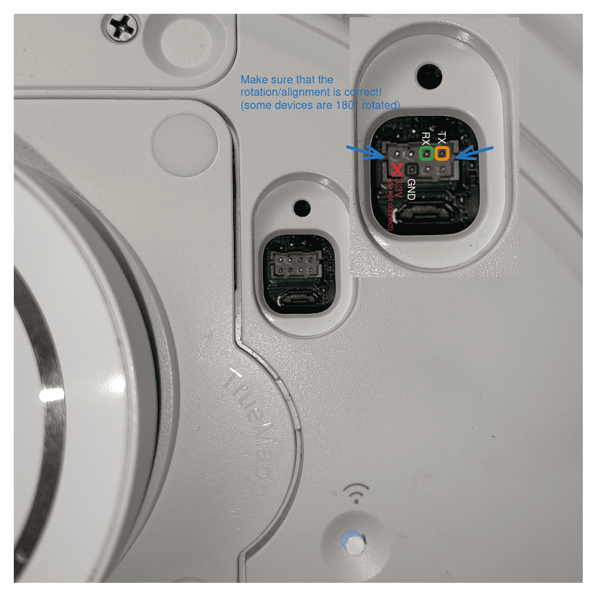
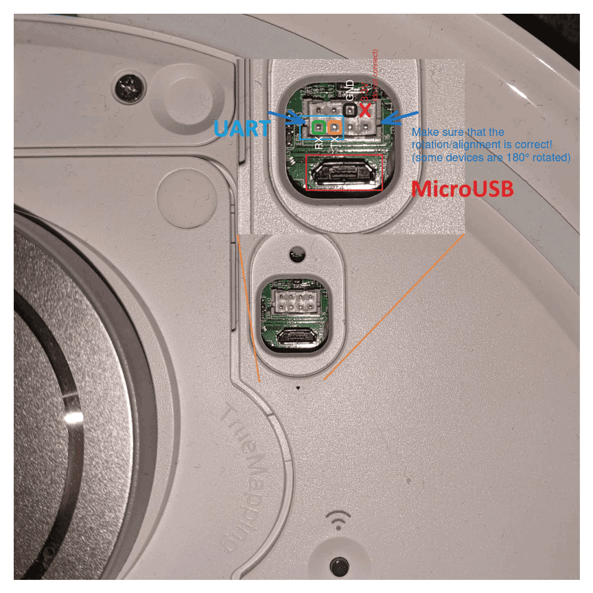

Certificate Unpinning on Ecovacs Bot
⚠️ Disclaimer:
Accessing and modifying your Ecovacs bot is risky and may permanently damage your device. These steps will void your warranty, may violate your terms of service, and Ecovacs will likely refuse support for modified devices. Proceed entirely at your own risk!
Double check all params. This instruction was tested on bot
T10 PLUS. If you have another model, details may differ.
This guide explains two approaches to enable your Ecovacs bot to trust a self-signed certificate for use with a self-hosted Bumper server:
- Option 1 (Recommended, Safer): Replace certificate files on the bot—no firmware modification required.
- Option 2 (Advanced): Extract, modify, and reflash the root filesystem for deeper changes.
🟢 Option 1: Simple Certificate Replacement
This method only updates certificate files on the device.
No firmware unpacking or flashing is required.
1. Start UART Console (on host)
Connect to the bot's UART serial port:
Adjust parameters as needed:
/dev/ttyACM0: device name may differ--log / --log-file: optional, remove if you do not want logs
picocom /dev/ttyACM0 --flow n --baud 115200 --log ./b-capture-"$(date --iso-8601=seconds)".log
tio /dev/ttyACM0 --flow none -b 115200 --log --log-file ./b-capture-"$(date --iso-8601=seconds)".log
| UART - T10 PLUS | UART - EXT-SOURCE |
|---|---|
|  |  |
⚠️ Never connect 5V to your UART adapter.
2. Interrupt Boot and Enter Shell (on bot)
On startup, interrupt into Hobot (press any key), then boot with updated bootargs:
setenv bootargs ${bootargs} init=/bin/bash
boot
Note
On some bots you need to hit a specific key mentioned during the boot-up process like:
Hit key to stop autoboot('CTRL+C'): 0
Sometime picocom is not working and in that case you can try minicom. You can keep pressed your key (eg. CTRL+C) during the boot process until it's interropted.
minicom -D /dev/ttyUSB0 -b 115200
3. Initialize System Resources (on bot)
Mount volumes and start required services:
export TERM=xterm-256color
mount -a
/etc/rc.d/pre_boot.sh start
/etc/rc.d/mount_data.sh start
/etc/rc.d/post_boot.sh start
/etc/rc.d/load_ko.sh start
/etc/rc.d/time_sync.sh start
Note
On some models executing the above commands are failing. In this case you can try to manually mount data by checking the boot logs for the correct partition. During the boot-up the partition table is logged on the console and looks similar to:
GPT part: 0, name: uboot, start:0x4000, size:0x2000
GPT part: 1, name: trust, start:0x6000, size:0x2000
GPT part: 2, name: eco, start:0x8000, size:0x3000
GPT part: 3, name: reserve, start:0xb000, size:0x800
GPT part: 4, name: sys, start:0xb800, size:0x1000
GPT part: 5, name: boot1, start:0xc800, size:0x3000
GPT part: 6, name: rootfs1, start:0xf800, size:0x40000
GPT part: 7, name: boot2, start:0x4f800, size:0x3000
GPT part: 8, name: rootfs2, start:0x52800, size:0x40000
GPT part: 9, name: data, start:0x92800, size:0x5b7df
Identify the data partition (in the above example, it's on index 9), add 1 to the index, and check if you have a device by ls /dev/rkflash0pX (replace X with your index. In the example below, /dev/rkflash0p10).
If the device exists, you can manually mount it with:
mkdir -p /data
fsck.ext4 -y /dev/rkflash0p10
mount -t ext4 -o rw /dev/rkflash0p10 /data
4. Replace Certificates (on bot)
ℹ️ Note: Certificate changes made in this step may be reverted by a factory reset or firmware update. It is recommended to first connect your bot to the official Ecovacs cloud and complete the initial setup before replacing the certificates. If you ever reset or update the bot, you will need to repeat these certificate replacement steps.
After running the above scripts, /data is mounted. You now need to manually update the certificate files on the bot using the UART shell:
- On your host, open the following files in a text editor:
./certs/ca.crt./certs/bumper.crt
- On the bot (UART shell), use an editor like
viorcat >to paste the contents into the correct files:- Overwrite
/data/ca.crtwith the contents of./certs/ca.crt - Overwrite
/data/ca-certificates/ca.pemwith the contents of./certs/ca.crt - For
/data/ca-certificates/ca-certificates.crt, append the contents of./certs/bumper.crtand then./certs/ca.crtto the end of the file (do not remove existing entries; just add these two certs at the end, in this order)
- Overwrite
Tip: You can use
vi /data/ca-certificates/ca-certificates.crtand paste at the end, or usecat >> /data/ca-certificates/ca-certificates.crtto append. Make sure to save and exit after pasting.
Your bot should now trust your self-signed certificates. Reboot and test connectivity to your Bumper server.
🟡 Option 2: Full Root Filesystem Modification (Advanced)
⚠️ Not Ready: This section is incomplete and not fully tested. Proceed only if you know what you are doing. More research/reverse engineering is required, especially for step
4. Flash Modified Rootfs Back to Bot -> b. Download and Flash on Bot.
If the simple method does not work, you may need to modify the root filesystem. This is riskier and can brick your device if done incorrectly.
1. (Optional) Setup WiFi (on bot)
If you need network access on the bot, set up WiFi:
a. Load WiFi Firmware
/etc/rc.d/wifi.sh start
b. Connect to WiFi
Replace placeholders with your actual values:
<YOUR_SSID><YOUR_WIFI_PASSWORD><YOUR_BOT_IP>(e.g., 192.168.112.57)<YOUR_GATEWAY_IP>(e.g., 192.168.112.1)
mkdir -p /tmp/wpa_ctrl
echo "ctrl_interface=/tmp/wpa_ctrl" > /tmp/wpa_supplicant.conf
wpa_passphrase '<YOUR_SSID>' '<YOUR_WIFI_PASSWORD>' >> /tmp/wpa_supplicant.conf
wpa_supplicant -B -i wlan0 -c /tmp/wpa_supplicant.conf -f /tmp/wpa.log -s
ifconfig wlan0 '<YOUR_BOT_IP>' netmask 255.255.255.0 up
route add default gw '<YOUR_GATEWAY_IP>'
2. Create Root Filesystem Dump (on bot)
a. Dump Root Filesystem
dd if=/dev/ubi0_0 of=/tmp/rootfs.img bs=1M
b. (Optional) Backup Other Partitions
dd if=/dev/ubi1_0 of=/tmp/data.img bs=1M
dd if=/dev/ubi2_0 of=/tmp/sysinfo.img bs=1M
dd if=/dev/ubi3_0 of=/tmp/ai_model.img bs=1M
tar -czf /tmp/data.tar.gz -C /data .
c. Serve Files for Download
cd / && httpd -p 8080
3. Download and Extract Root Filesystem Dump (on host)
a. Download Root Filesystem to Host
Replace
<YOUR_BOT_IP>with your bot's actual IP address.
curl -Lo rootfs.img http://<YOUR_BOT_IP>:8080/tmp/rootfs.img
b. (Optional) Download Other Partitions to Host
curl -Lo data.img http://<YOUR_BOT_IP>:8080/tmp/data.img
curl -Lo sysinfo.img http://<YOUR_BOT_IP>:8080/tmp/sysinfo.img
curl -Lo ai_model.img http://<YOUR_BOT_IP>:8080/tmp/ai_model.img
curl -Lo data.tar.gz http://<YOUR_BOT_IP>:8080/tmp/data.tar.gz
You can extract or inspect these optional backup partitions with tools like ubireader_extract_files, strings, or unsquashfs:
ubireader_extract_files data.img
cat sysinfo.img | strings
unsquashfs -d ai_model ./ai_model.img
mkdir -p data && tar -xzf ./data.tar.gz -C data
c. Extract and Modify Rootfs
unsquashfs -d rootfs ./rootfs.img
# ... edit rootfs as needed ...
mksquashfs rootfs rootfs_mod.img -noappend -root-owned -p '/dev d 755 0 0' -p '/dev/console c 600 0 0 5 1'
4. Flash Modified Rootfs Back to Bot
a. Start HTTP Server on Host
python3 -m http.server 8080
b. Download and Flash on Bot
⚠️ Not Ready: This step is not finished. When starting into
boot_mode2, the root password is required. Further reverse engineering is needed.Replace
<YOUR_HOST_IP>with your host's actual IP address.
curl -Lo /data/rootfs_mod.img http://<YOUR_HOST_IP>:8080/rootfs_mod.img
ubi_atomic_update_leb /dev/ubi2_0 -i "boot_mode2" -n 0
reboot
ubiupdatevol /dev/ubi4_0 /data/rootfs_mod.img
ubi_atomic_update_leb /dev/ubi2_0 -i "boot_mode1" -n 0
reboot
📝 Notes
- Always backup your data before making changes.
- If unsure, use Option 1 first.
- For certificate creation, see Create Certificates.
- For more context, see Architecture and App Certificate Unpinning.
📚 References
- https://dontvacuum.me/talks/37c3-2023/37c3-vacuuming-and-mowing.pdf
- https://dontvacuum.me/talks/DEFCON32/DEFCON32_reveng_hacking_ecovacs_robots.pdf
- https://media.ccc.de/v/37c3-11943-sucking_dust_and_cutting_grass_reversing_robots_and_bypassing_security#t=2028
- https://github.com/itsjfx/ecovacs-hacking/blob/master/x1_omni.md
- https://dontvacuum.me/